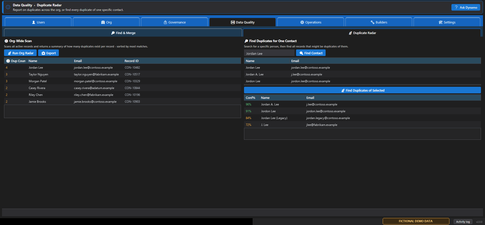

Watch and record
Video tutorials
Start with the captioned product overview, then use the short, ready-to-record scripts below for focused walkthroughs. The scripts avoid customer data and production writes.
Dynamic Dynamo Kit feature tour
Download the captioned overview MP4 →
Text transcript
Dynamic Dynamo Kit is a native Dynamics 365 and Dataverse administration app. The tour shows Users and Roles, Duplicate Radar, Find and Merge, Effective Access, Governance Risk, Microsoft license overview, Role Reports, and Pro activation. The Free tier includes core workflows; screens marked Pro require an active trial or Pro license.
Understand user access
Text transcript
Find the user and load direct roles, teams, and business-unit context. Calculate effective access to combine direct and inherited permissions. Use role reports to review and export the evidence.
Investigate duplicate records
Text transcript
Begin with Duplicate Radar to rank likely matches without changing data. In Find and Merge, review confidence, survivor reasoning, and every conflict before confirming a merge.
Run a governance review
Text transcript
Run all governance risk checks, filter Privileges, Authentication, and Unused access, trace access sources with Effective Access, and review Microsoft license posture before exporting findings.
Tutorial 1: Install and connect safely
- Show the public Microsoft Store listing and install the app.
- Open Settings and add a sandbox environment with its full URL.
- Explain Interactive/MFA, Service Principal, and Certificate authentication.
- Use Test connection, save, and select Connect.
- Turn on What-If Mode and run Users > User Access > Roles.
Read the narration script
"In this tutorial, we will install Dynamic Dynamo Kit and connect a sandbox without making any Dataverse changes. The app is free to install from Microsoft Store. On first launch, open Settings and add the full environment URL. Interactive mode is the right choice for a normal administrator who uses MFA. Service principal and certificate modes are intended for configured app registrations. Test the connection before saving. Once connected, enable What-If Mode and open Users, User Access, Roles. Find a user and load roles. You have now verified the connection with a read-only workflow."
Tutorial 2: Investigate and merge duplicates
- Use Duplicate Radar to rank likely duplicates without changing records.
- Open Find & Merge, explain maximum records and confidence filters, then scan.
- Review matched fields, conflicts, survivor recommendation, and protected-field behavior.
- Open the merge review but stop before a production write; demonstrate in a sandbox only.
- Show auto-merge rules and explain that recurring scans export CSV and never merge automatically.

Read the narration script
"Duplicate cleanup should begin with investigation, not merging. Duplicate Radar is the read-only starting point. It shows records with likely duplicates and lets you inspect one contact. In Pro, Find and Merge adds confidence filters, match profiles, survivor recommendations, and conflict review. Before you merge, verify the environment, open each candidate, review the recommended survivor, and resolve every field conflict. Protected fields can force manual review. Scheduled scans create findings for review; they do not perform unattended merges. Always keep an independent Dataverse backup."
Tutorial 3: Explain a user's effective access
- Start in Users > User Access and review direct roles and teams.
- Open Operations > Insights > Effective Access.
- Browse for the same user and select Show effective access.
- Filter by table and explain direct versus inherited permissions.
- Export the result for an access review.
Read the narration script
"A direct role list does not always explain what a person can really do because team membership adds inherited access. Start with User Access to see the direct assignments. Then open Effective Access, choose the same person, and calculate their combined permissions. Filter to the table under investigation and use the source information to trace where the access came from. The result is read-only and can be exported for review."
Tutorial 4: Run a governance review
- Open Governance > Risk and run all checks.
- Explain the score, grade, passed rules, and categories.
- Filter Privileges, Authentication, and Unused access separately.
- Export findings; explain that findings require human review before cleanup.
- Show Monitoring > Snapshots & Changes and the compliance report.
Read the narration script
"The Risk screen combines several security checks into one review. Run all checks, then use the category filters instead of treating the score as the whole story. Privileges can reveal broad access, Authentication highlights sign-in and service-account hygiene, and Unused access identifies cleanup candidates. Export the findings and validate each item with its owner. The toolkit reports evidence; it does not replace your organization's approval process. Snapshots and Changes help you compare posture over time."
Safe recording checklist
- Use a demo or sandbox tenant with synthetic names and records.
- Hide tenant URLs, email addresses, IDs, tokens, secrets, and license keys.
- Use a 1920×1080 capture and increase Windows scaling if UI text is hard to read.
- Keep each video focused on one outcome and under ten minutes.
- Enable What-If and avoid real production writes while recording.
- Add captions and put the Store, manual, privacy, and support links in the description.